Fantastic video from YouTube channel Watch It Played demonstrating setup and how to play Stonemaier's Apiary.
Place on the table, showing the side matching your player count (1-3 or 4-5).
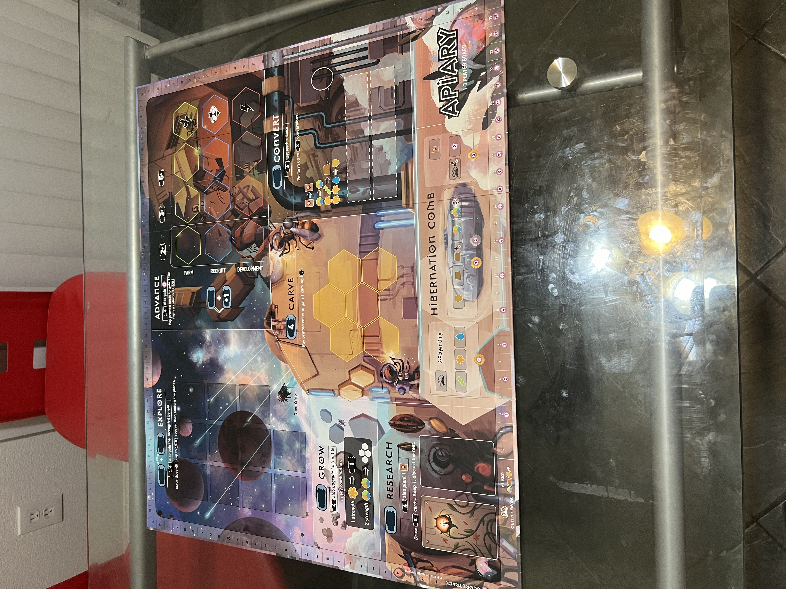Shuffle and place in a stack face down next tothe board.
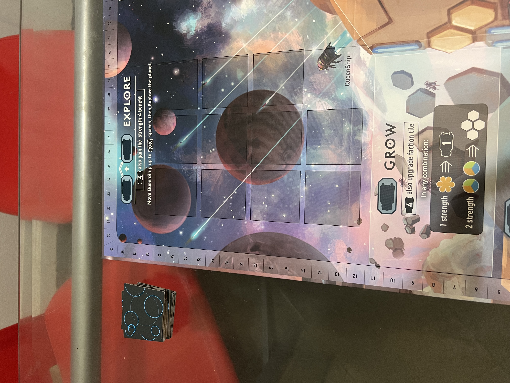Randomly place 1 face up on each planet spot in the planet grid, then return excess explore tokens to the box.
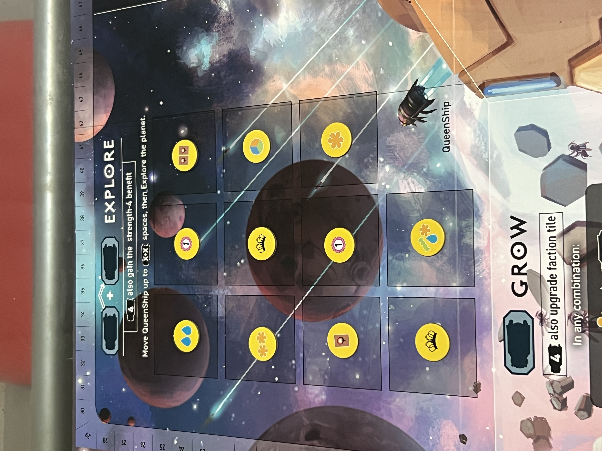Place on its starting location in the planet grid.
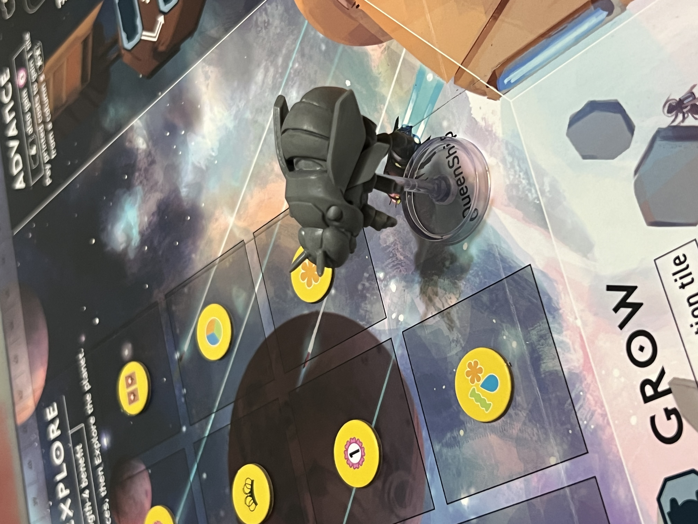Randomly place 1 face up on each of the rectangular spots on the Convert action. Return excess dance tiles to the box.
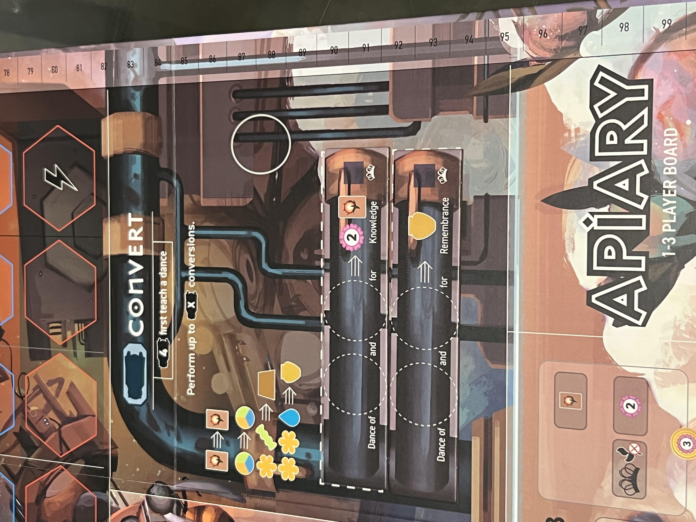Place in a stack on the Convert action (these are not randomized; they are open information for all players).
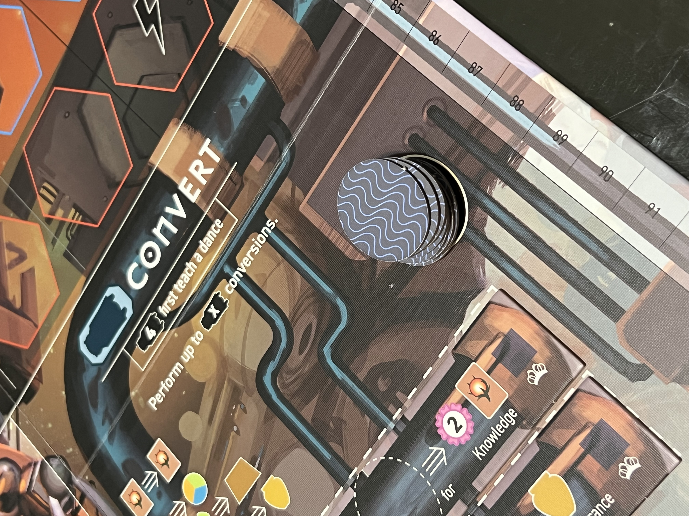Shuffle and place in a deck face down on the Research action.
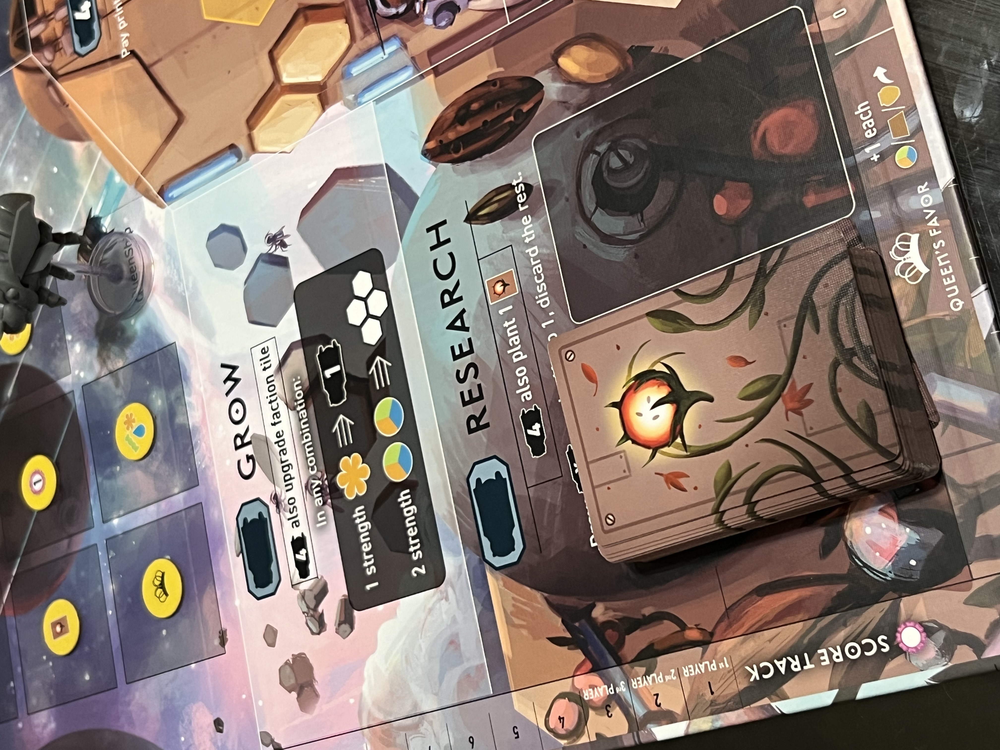Shuffle and place 1 tile face up on each farm tile slot, then place the rest in a stack face down on the Advance action.
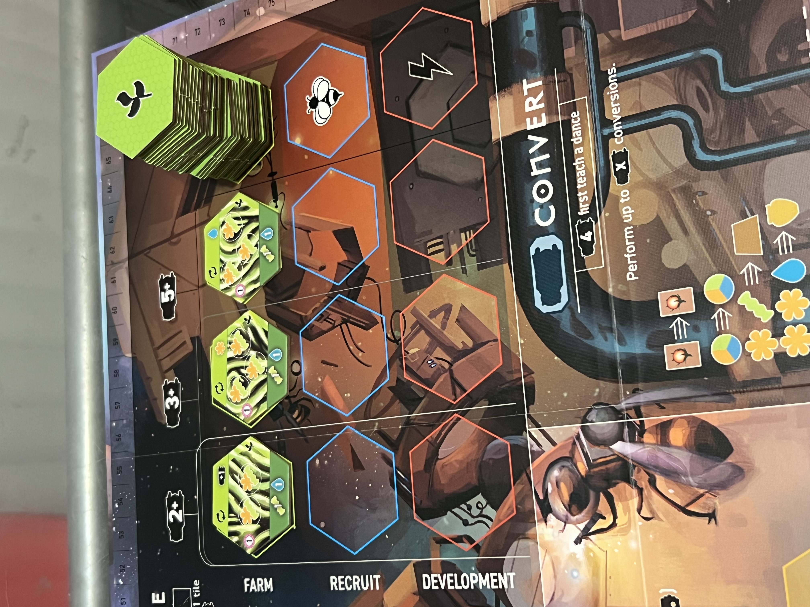Shuffle and place 1 tile face up on each recruit tile slot, then place the rest in a stack face down on the Advance action.
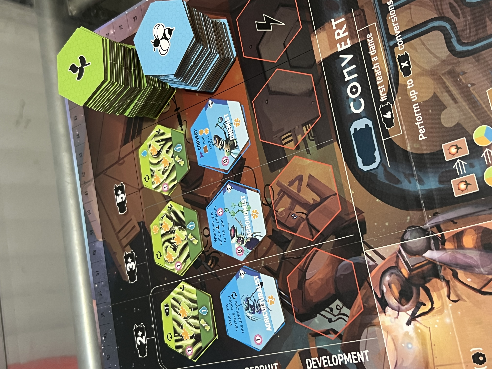Shuffle and place 1 tile face up on each development tile slot, then place the rest in a stack face down on the Advace action.
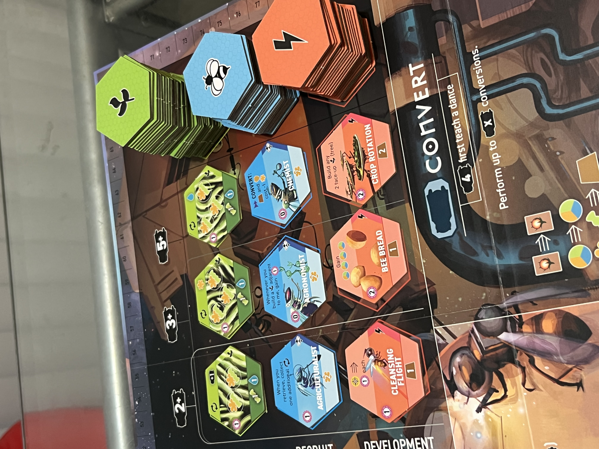Shuffle and place 1 tile face up on each slot on the Carve action, then return excess carving tiles to the box.
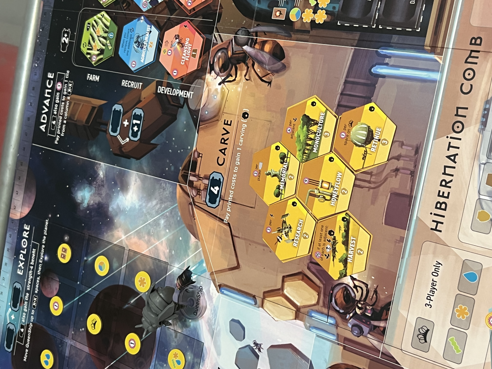Place all other items-frames, fiber, pollen, water, wax, and honey-in a general supply next to the board.
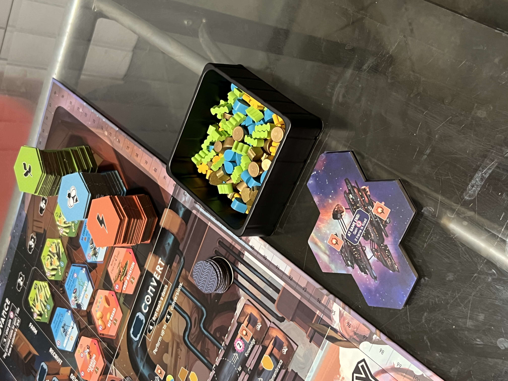